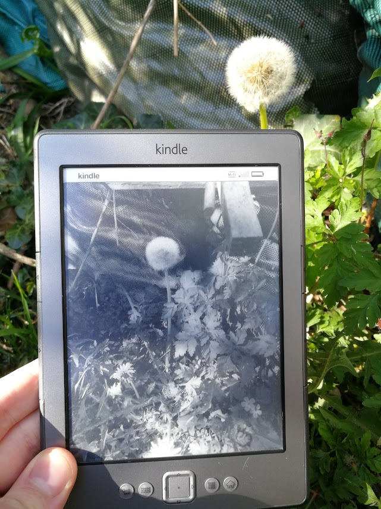
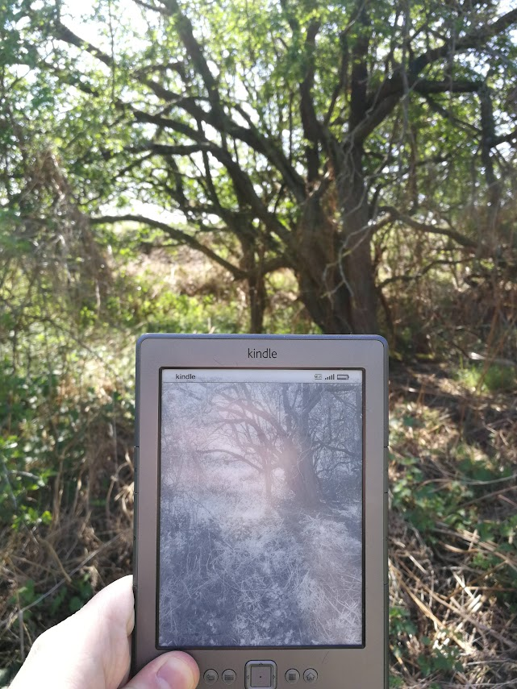
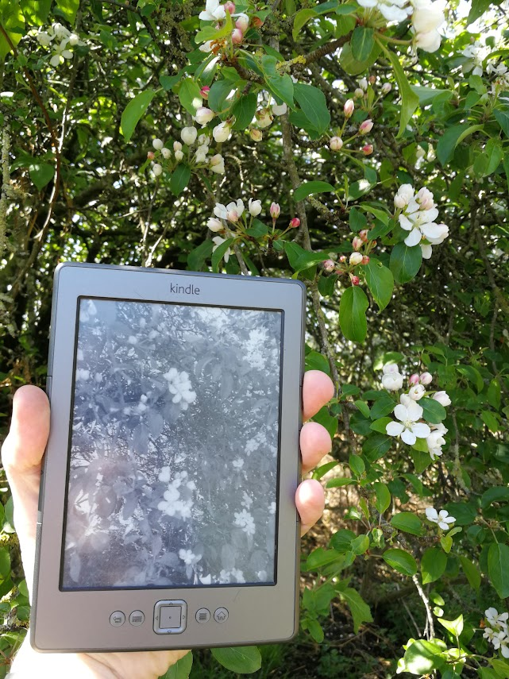
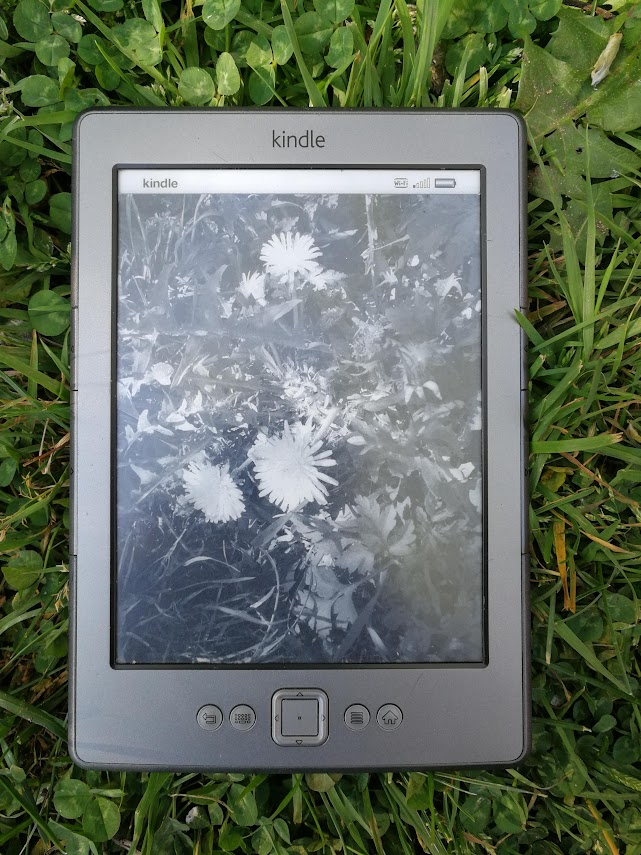
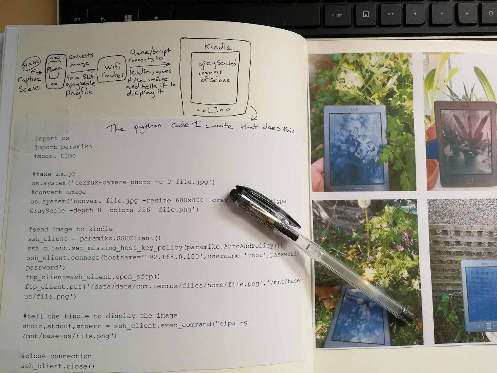

Kindle
Inspired by Antony Cairns. A short script was written as a tiny side project during my COVID restricted masters in photography. With no access to a darkroom I experimented with obscure/misunderstood digital technologies for image-making. The aim is to demonstrate e-ink technology as a medium for reproduction and the act of repurposing a commercial artefact for unconventional means as a digital polaroid. The script runs on an Android phone, capturing an image from the camera and displaying it on a Kindle. The image is not saved, hence once the eink display is refreshed with another image it is lost.




